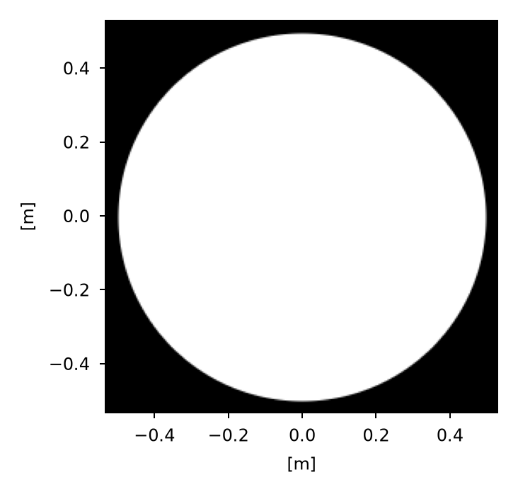
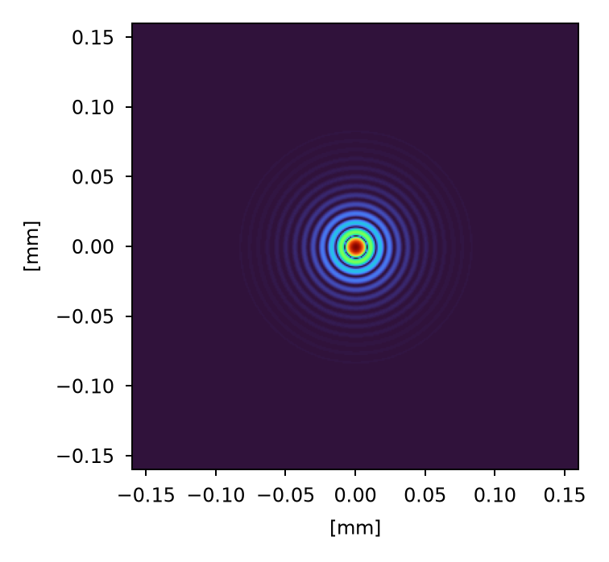
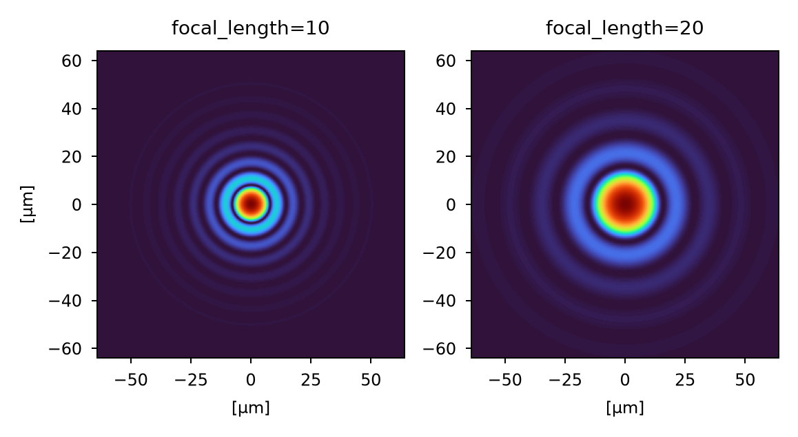

Basics#
Overview#
Lentil uses Fourier transform-based algorithms to numerically model the
propagation of an electromagnetic field between conjugate planes of an optical
system. The electromagnetic field is represented by a Wavefront object which
stores the complex amplitude of the field at a discretely sampled grid of
points. The optical system is represented by a set of Plane objects which
interact with a Wavefront as it propagates through the system.
The propagation workflow#
Every model follows the same basic flow: create a Wavefront, multiply it by
the Plane objects that describe the optical system, calling a propagation
function each time the wavefront moves between a pupil and image plane.
Create a new wavefront#
A Wavefront is a monochromatic, discretely sampled complex. New wavefronts
represent an infinite plane wave with a scalar field 1+0j, which
broadcasts to
the shape of the first plane it meets:
>>> w = lentil.Wavefront(wavelength=650e-9)
>>> w.field
array(1+0j)
>>> w.focal_length is None
True
Modify a wavefront by multiplying it with a plane#
Multiplying a wavefront by a Plane modifies the wavefront state in the
following ways:
the wavefront’s complex field is updated by the plane’s amplitude and OPD
the wavefront’s
ptypemay be set by the planethe wavefront’s
focal_lengthanddiametermay be updated by the plane
These updated values determine the geometry of the next propagation.
>>> pupil = lentil.Pupil(amplitude=lentil.circle((256, 256), 120),
... pixelscale=1/240, focal_length=10)
>>> w = w * pupil
>>> w.ptype
ptype('pupil')
>>> w.focal_length
10

A Pupil created without a focal_length, such as a deformable mirror or
Lyot stop, leaves the wavefront’s focal length and diameter unchanged. See
How a plane affects a wavefront for more on how planes modify a
wavefront.
Propagate the wavefront#
propagate_fft() and propagate_dft() move a
wavefront from a pupil to an image plane or from an image plane to a pupil.
The output grid is given either with pixelscale and shape or by
providing a target plane passed as to.
>>> w = lentil.propagate_dft(w, pixelscale=5e-6, shape=(64,64),
... oversample=5)

The ptype of a wavefront after propagation is determined by its ptype
before propagation:
Wavefront |
Result |
Notes |
|---|---|---|
|
|
Propagation distance is the focal length |
|
|
Propagation distance is the focal length |
|
— |
Raises |
Planes of the same type (a pupil followed by another pupil or an image plane
followed by another image plane) need no propagation. Multiply the next plane
directly using resample() or rescale()
first if the planes have different sampling.
Propagating onto a plane#
Propagation sampling and geometry can be configured to propagate to a specific
plane by specifying the to parameter. This approach reads pixelscale
and shape from the plane, ensuring the output is compatible with the
supplied plane.
detector = lentil.Image(pixelscale=5e-6, mask=np.ones((64, 64)))
w = lentil.Wavefront(650e-9) * pupil
w = lentil.propagate_dft(w, to=detector)
w = w * detector
to follows these rules:
The plane is not applied. Multiply it into the result yourself, as above. You can reuse the plane’s grid for a propagation without applying the plane, or apply it at a later step.
pixelscaleorshapepassed explicitly override the plane’s values.The plane’s
ptypemust match the result of the propagation (imagefor a pupil to image propagation) or benone. Anything else raisesTypeError.The plane must have a
pixelscale. If it has no shape, the output takes the input wavefront’s shape.With
oversample > 1the result is sampled atplane.pixelscale / oversampleand can no longer be multiplied by the plane. Rebin the intensity, or propagate withoversample=1when the plane must be applied.
Overriding focal length#
A propagation uses the wavefront’s focal_length, which it inherits from
the last powered optic or Pupil it passed through. This focal length can be
overridden by passing focal_length to a propagation function. The returned
wavefront is updated with the new focal length.
For pupil to image plane propagations, focal_length sets the plate scale:

For an image plane to pupil propagation, focal_length is the focal length
of the collimating optic. It sets the size of the re-imaged pupil, which is
recorded in the wavefront’s diameter. See Multi-plane propagation for more on
working with relays, field stops, and other multi-plane systems.
Choosing a propagator#
Lentil has two far-field propagators. propagate_fft() can be
faster for large, full-field outputs. propagate_dft() is
preferred for modeling systems with large tilts, segmented apretures, or for
when smaller portions of the output plane are required.
|
|
|
|---|---|---|
Output sampling |
Exactly |
Exact, but the output |
Computed region |
Adjustable via |
Full output plane only |
Fitted tilt (Propagation with large tilts) |
Supported |
Raises |
|
Supported |
Not supported |
Fastest for |
Small output windows, sparse or segmented apertures |
Large output planes, broadband loops with a preallocated |
Propagation arguments#
Argument |
Controls |
Details |
|---|---|---|
|
Target plane that supplies |
|
|
Output sampling |
|
|
Output plane size, in output pixels |
|
|
Output plane oversampling factor |
|
|
Propagation distance for this propagation |
|
|
Size of the region actually computed |
|
|
Bounding box of the region actually computed |
|
|
Position of the optical axis in the output plane |